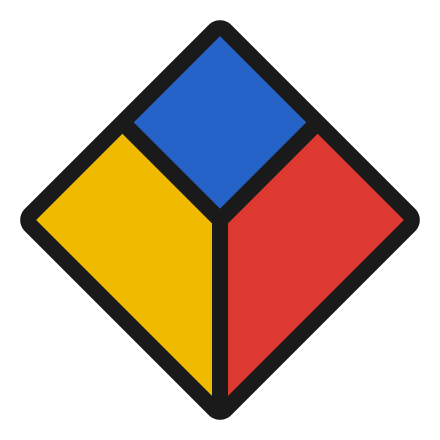
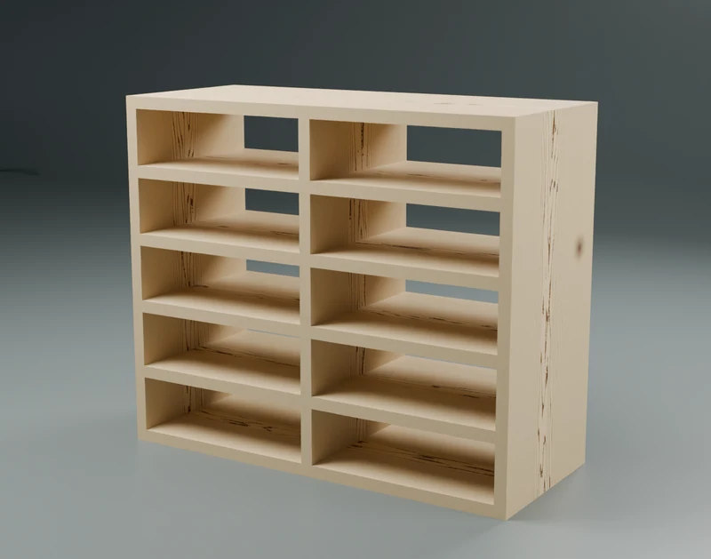

Dominique Piché-Meunier
I’m an applied scientist at Adobe, working on 3D computer vision, multimodal generative models, and distributed systems.
Projects

Woodworking
Furniture designs, project files, and build guides for my woodworking projects.
Research
-
Lens Parameter Estimation for Realistic Depth of Field Modeling
Authors
Dominique Piché-Meunier, Yannick Hold-Geoffroy, Jianming Zhang, Jean-François Lalonde
ICCV · 2023 -
Multiobjective Optimisation for Designing Salary Structures
Authors
François Alexandre Tremblay, Dominique Piché-Meunier, Louis Dubois
CPAIOR · 2023 -
A Deep Perceptual Measure for Lens and Camera Calibration
Authors
Yannick Hold-Geoffroy, Dominique Piché-Meunier, Kalyan Sunkavalli, Jean-Charles Bazin, Francois Rameau, Jean-François Lalonde
IEEE TPAMI · 2023 -
A high-Z inorganic scintillator–based detector for time-resolved in vivo dosimetry
Authors
Erik B Jørgensen, et al. (including Dominique Piché-Meunier)
Medical Physics · 2021
About
I completed my master’s in electrical engineering at Université Laval’s Institute Intelligence and Data (IID), supervised by Jean-François Lalonde and Yannick Hold-Geoffroy.
During my master’s, I interned with Adobe Research and Adobe’s 3D & Immersive team in San Francisco. Before that, I studied engineering physics at Université Laval.